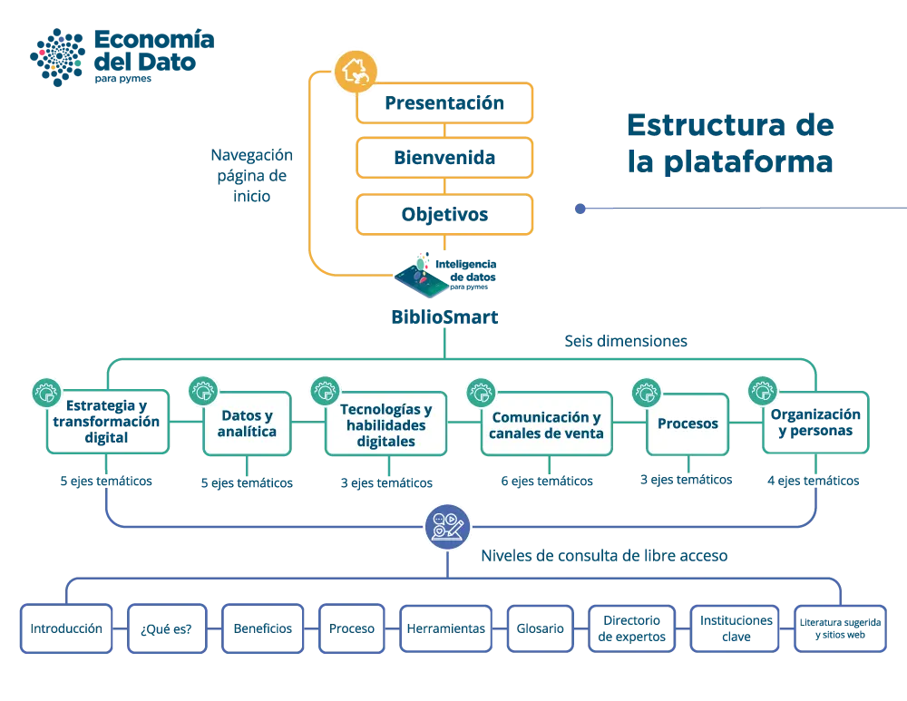

Introducción
Bienvenidos a "Economía del Dato". Este tutorial te guiará a través de las características principales de esta plataforma y te mostrará cómo utilizar la aplicación de manera efectiva.

1. Acceso a la Aplicación
- Abrir el Navegador: Abre tu navegador web preferido.
- Ingresar la URL: Escribe https://economiadeldato.cambiotec.org.mx/ en la barra de direcciones y presiona Enter.
2. Navegación Principal
En la página principal verás una barra de navegación en la parte superior. Esta barra contiene enlaces a las diferentes secciones de la aplicación.
- Inicio: Te lleva a la página principal de la aplicación.
- Presentación: En video y en texto encontrarás la presentación de BiblioSmart, una plataforma de apoyo a las pymes de América Latina y el Caribe, en el marco de las actividades de Cooperación Técnica “Economía del Dato justa e inclusiva en ALC”.
- Bienvenida: Te proporciona un mensaje de bienvenida a la plataforma BiblioSmart y de invita a consultar esta herramienta de apoyo a las pymes.
- Objetivos: Detalla los objetivos, general y específicos, que persigue la plataforma BiblioSmart.
- BiblioSmart: Aquí encontrarás el acceso a la plataforma BiblioSmart, un repositorio de materiales y recursos organizados en seis dimensiones y sus correspondientes ejes temáticos.
3. Uso de BiblioSmart
La plataforma BiblioSmart está organizada en seis dimensiones, mismas que a su vez, se dividen en ejes temáticos como se describe a continuación:
- Estrategia y transformación digital
- Introducción a la transformación digital
- Planeación y estrategia digital
- Inteligencia de negocio
- Modelos de negocio
- Medios de pago digitales
- Datos y analítica
- Analítica de datos
- Sistemas especializados
- Sistemas y herramientas de analítica
- Presentaciones para la toma de decisiones
- Modelos matemáticos
- Tecnologías y habilidades digitales
- Infraestructura y ciberseguridad
- Competencias y habilidades digitales
- Tecnologías digitales y herramientas habilitadoras
- Comunicación y canales de venta
- Canales digitales de comunicación
- Canales de venta
- Comercio electrónico
- Marketing digital
- Gestión de clientes
- Arquetipos de clientes
- Procesos
- Desarrollo de ambientes digitales
- Logística
- Procesos de negocio
- Organización y personas
- Cultura organizacional
- Gestión del talento humano en la era digital
- Indicadores y métricas en entornos digitales
- Estrategia de negocios en la era digital
4. Ejes temáticos
Cada eje temático se organizó en nueve apartados diseñados así para facilitar su consulta y fácil manejo. A continuación, se describe el contenido de cada apartado:
-
Introducción
A través de un video, se muestra un breve resumen del contenido y alcance del eje temático en cuestión.
-
¿Qué es?
En este apartado se encuentra el detalle y desarrollo de los contenidos y materiales didácticos, diseñados para la comprensión del tema, empezando por la definición de cada eje.
-
Beneficios
Por medio de infografías se sintetizan los beneficios potenciales que las pymes pueden obtener al emprender acciones relacionadas con cada eje temático.
-
Proceso
De una forma gráfica e ilustrativa, se muestran los pasos que debe seguir una pyme para la implementación de lo señalado en el eje temático.
-
Herramientas
Se detallan los recursos y materiales que auxilian en la comprensión del tema. Se conforma por una colección de recursos, videos y documentos útiles para fortalecer la comprensión temática y dar continuidad a lo aprendido.
-
Glosario
Integra un listado de definiciones de conceptos básicos y términos relacionados con el tema.
-
Directorio de expertos
Presenta un breve listado de nombres y direcciones web de especialistas por si requieres apoyo especial. Puedes encontrar la información de contacto de un especialista del eje temático en cuestión.
-
Instituciones clave
Aquí encontrarás un directorio datos de las instituciones y asociaciones que te pueden orientar y apoyar al respecto del eje temático.
- Literatura sugerida y sitios web
Contiene un listado de documentos y materiales de consulta con links que te llevarán a sitios y libros relacionados con el eje temático.
Conclusión
Esperamos que este tutorial te facilite y contribuya al uso y aprovechamiento de la plataforma BiblioSmart "Economía del Dato para pymes".
Te invitamos a consultar y profundizar en las temáticas que presenta la plataforma BiblioSmart, un repositorio de materiales didácticos diseñados exclusivamente para pymes de ALC.